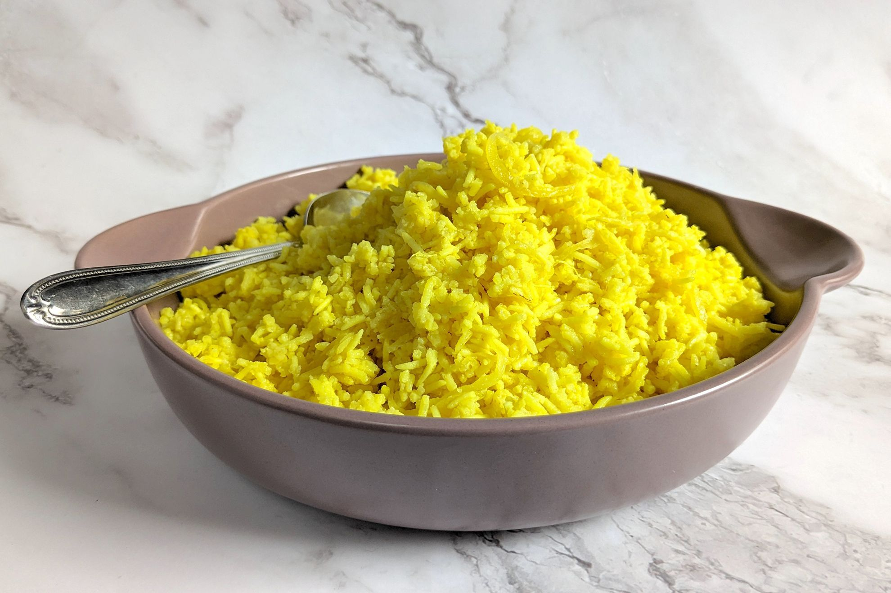

Pilau Rice

Ingredients
- 1 tsp vegetable oil
- 2 tsp unsalted butter
- 1 small onion - peeled and finely diced
- 1/2 tsp cumin seeds
- 6 cardamom pods
- 6 cloves
- 2 tsp turmeric
- 2 bay leaves
- 300 g Basmati or long grain rice
- 600 ml boiling water
Method
- Heat the oil and butter in a pan until the butter melts. Add the onion and cook on medium heat for 5 minutes until softened.
- Add in the cumin seeds, cardamom pods, cloves, turmeric and bay leaves.
- Heat through, whilst stirring for a further minute.
- Add the rice and stir to coat in the spices.
- Add the boiling water, stir once and bring back to the boil, then place a lid on the pan and turn the heat down to very low (I use the lowest heat if cooking on gas, or setting 5 (of 10) for induction). Cook for 20 minutes.
- Once cooked, turn the heat off. Leave the lid for a few minutes, then remove the lid, fluff the rice using a fork and serve. You can discard the cardamom and bay leaves.
Home